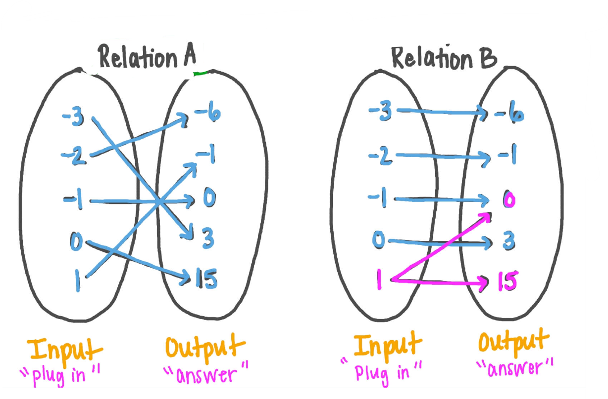

Quiz No. 1 (M2) - 05/02/25:
-
ចូររកដែនកំណត់ និង រ៉ង់របស់ទំនាក់ទំនងក្នុងតារាងខាងក្រោម៖
-
Determine if the following relations are functions.
-
$R=\{(0,1),(1,3),(3,4),(5,2), (1,-2), (3,-2)\}$
-
$S=\{(0,1),(0,2),(3,4),(3,1)\}$
-
$T=\{(0,1),(1,2),(3,4),(4,1,0), (2,1)\}$
-
A function $f$ is defined by
$$
f(x)= \begin{cases}1-x & \text { if } x \leqslant-1 \\ x^2 & \text { if } x \gt -1\end{cases}
$$
គណនា $f(-2), f(-1)$ និង $f(0)$ រួចគូសក្រាហ្វរបស់វា។
Quiz No. 1 (M2) - 05/02/25:
-
-
ចូររកដែនកំណត់ និង រ៉ង់របស់អនុគមន៍ក្នុងដ្យាក្រាមខាងក្រោម។
-
ចូរកំណត់អនុគមន៍តាមដ្យាក្រាមនេះ។
Quiz No. 1 (M1) - 05/02/25:
-
សីតុណ្ហភាព $T$ (គិតជា ${ }^{\circ} \mathrm{C}$) ត្រូវបានកត់ត្រារៀងរាល់ 2 ម៉ោងម្ដង ចាប់ពីកណ្ដាលអាធ្រាតដល់ម៉ោង 2:00 PM ក្នុងទីក្រុងមួយនៅថ្ងៃមួយក្នុងខែមិថុនា។ ពេល $t$ ត្រូវបានវាស់គិតជាម៉ោង ចាប់ពីពាក់កណ្តាលអធ្រាត្រ។
\[
\begin{array}{|c|c|c|c|c|c|c|c|c|}
\hline t & 0 & 2 & 4 & 6 & 8 & 10 & 12 & 14 \\
\hline T & 23 & 21 & 20 & 19 & 21 & 26 & 28 & 30 \\
\hline
\end{array}
\]
-
ចូរគូសក្រាហ្វតំណាង $T$ ជាអនុគមន៍ទៅនឹង $t$ ។
-
ដោយប្រើក្រាហ្វនេះ ចូរប៉ាន់ស្មានសីតុណ្ហភាពនៅម៉ោង 9:00 Am ។
-
ចូរគណនា
(a). $f(x)=4+3 x-x^2, \quad \frac{f(3+h)-f(3)}{h}, \qquad$
(b) $f(x)=x^3, \quad \frac{f(a+h)-f(a)}{h}$
(c) $f(x)=\frac{1}{x}, \quad \frac{f(x)-f(a)}{x-a},\qquad$
(d). $f(x)=\sqrt{x+2}, \quad \frac{f(x)-f(1)}{x-1}$
-
A function $f$ is defined by
$$
f(x)= \begin{cases} -2x & \text { if } x \leqslant 2 \\ x^2 & \text { if } x^2 \gt 2\end{cases}
$$
គណនា $f(-1), f(3)$ និង $f(0)$ រួចគូសក្រាហ្វរបស់វា។
-
Find the domain of the function.
i. $f(u)=\frac{u+1}{1+\frac{1}{u+1}}$
ii. $F(p)=\sqrt{2-\sqrt{p}}$
iii. $h(x)=\sqrt{x^2-4 x-5}$
-
-
ចូររកដែនកំណត់ និង រ៉ង់របស់អនុគមន៍ក្នុងដ្យាក្រាមខាងក្រោម។
-
ចូរកំណត់អនុគមន៍តាមដ្យាក្រាមនេះ។
Quiz No. 1 (M4):
-
Determine the domain and range for the relation shown in the table.
-
Determine if the following relations are functions.
-
$R=\{(0,1),(1,3),(3,4),(5,2)\}$
-
$R=\{(0,1),(0,2),(3,4)\}$
-
Use a mapping diagram to determine if the relation $R=\{(0,1),(0,2),(3,4)\}$ is a function.
-
Using the function $f=\{(0,1),(1,3),(3,4),(5,2)\}$, evaluate the following: a. $f(1)$, $\quad$ b. $f(5)$, $\quad$ c. $f(3)$
Quiz No. 1:
-
Determine whether the curve is the graph of a function
of $x$. If it is, state the domain and range of the function.
-
If $g(x)=\frac{x}{\sqrt{x+1}}$, find $g(0), g(3), 5 g(a), \frac{1}{2} g(4 a), g\left(a^2\right)$, $[g(a)]^2, g(a+h)$, and $g(x-a)$.
-
Evaluate $f(-3), f(0)$, and $f(2)$ for the piecewise defined function. Then sketch the graph of the function.
-
$f(x)= \begin{cases}x^2+2 & \text { if } x\lt 0 \\ x & \text { if } x \geqslant 0\end{cases}$
-
$f(x)= \begin{cases}5 & \text { if } x \lt 2 \\ \frac{1}{2} x-3 & \text { if } x \geqslant 2\end{cases}$
Quiz No. 1 (S):
-
Is the following Arrow diagram is a function? Yes or No?

linear-1.png
-
គេឱ្យសំណុំ $A=\{1,2,3,4\}, B=\{2,3,4\}$ ។ តើមួយណាជាអនុគមន៍ពី $A$ ទៅ $B$?
(a) $\{(1,2),(1,3),(2,3),(3,3)\}, \qquad$ (b) $\{(1,3),(2,3)\}$
(c) $\{(1,3),(2,2),(3,3)\}, \qquad$ (d)
$\{(1,2),(2,3),(3,2),(3,4)\}$
-
តើមួយណាមិនមែនជាអនុគមន៍ ?
a. $\left\{(x, y): x, y \in R, x^2=y\right\}\qquad$
b. $\left\{(x, y): x, y \in R, y^2=x\right\}$
c. $\left\{(x, y): x, y \in R, x=y^3\right\}\qquad$
d. $\left\{(x, y): x, y \in R, y=x^3\right\}$
-
Using the function $f=\{(0,1),(1,3),(3,4),(5,2)\}$, evaluate the following:
a. $f(1)$, $\quad$ b. $f(5)$, $\quad$ c. $f(3)$
Quiz No. 1:
-
យាយរបស់អ្នកមានដើមស្រល់នៅក្នុងទីធ្លារបស់គាត់ ដែលជ្រុះផ្លែច្រើន។ គាត់នឹងបង់លុយឱ្យអ្នក $\$0.10 $ សម្រាប់ការរប្រមូលបានផ្លែស្រល់ជ្រុះមួយកូនបាវ។ កាលពីសប្តាហ៍មុនអ្នករកបាន $5 ដុល្លារ ក្នុងការប្រមូលសម្រាមនេះ ។
-
ចូរសរសេរទំនាក់ទំនងមួយអំពីចំនួនទឹកប្រាក់សរុបដែលអ្នកអាចរកបានជាអនុគមន៍ទៅនឹងចំនួនកូនបាវដាក់ផ្លែស្រល់ ដែលអ្នកប្រមូលបាន ។
-
ចូរកំណត់អថេរអាស្រ័យ និងអថេរមិនអាស្រ័យ។
-
ប្រសិនបើអ្នកប្រមូលបានចំនួន 200 កូនបាវក្នុងសប្តាហ៍នេះ តើអ្នករកលុយបានប៉ុន្មាន?
-
If $g(x)=\frac{x}{\sqrt{x+1}}$, find $g(0), g(3), 5 g(a), \frac{1}{2} g(4 a), g\left(a^2\right)$, $[g(a)]^2, g(a+h)$, and $g(x-a)$.
Quiz No. 1 (M3):
-
Is the following Arrow diagram is a function? Yes or No?

-
គេឱ្យសំណុំ $A=\{1,2,3,4\}, B=\{2,3,4\}$ ។ តើមួយណាជាអនុគមន៍ពី $A$ ទៅ $B$?
(a) $\{(-1,2),(1,3),(2,3),(-2,3)\}, \qquad$ (b) $\{(1,3),(2,3),(3,3)\}$
(c) $\{(1,3),(2,2),(3,3)\}, \qquad$ (d)
$\{(1,-2),(2,3),(3,2),(3,4)\}$
-
តើមួយណាមិនមែនជាអនុគមន៍ ?
a. $\left\{(x, y): x, y \in \mathbb R, -x^2=y\right\}\qquad$
b. $\left\{(x, y): x, y \in \mathbb R, y^2=-x\right\}$
c. $\left\{(x, y): x, y \in \mathbb R, x=y^3\right\}\qquad$
d. $\left\{(x, y): x, y \in \mathbb R, y^2=(x-1)^3\right\}$
-
Using the function $f=\{(0,1),(1,-3),(-3,4),(5,-2)\}$, evaluate (គណនា) the following:
a. $f(1)$, $\quad$ b. $f(5)$, $\quad$ c. $f(3)$
Quiz No. 1:
-
យាយរបស់សុភាពមានដើមស្រល់ជាច្រើនដើម ដែលដាំនៅក្នុងទីធ្លាផ្ទះរបស់គាត់ ហើយមានជ្រុះផ្លែច្រើនជារៀងរាល់ព្រឹក។ គាត់អោយសុភាពប្រមូលផ្លែទាំងនោះដាក់កូនបាវតូចៗ ដោយឱ្យថ្លៃ $\$0.3 $ ក្នុងមួយកូនបាវ។ ការប្រមូលយកផ្លែស្រល់ដែលជ្រុះនេះ គឺទើបតែចាប់ផ្ដើមពីព្រឹកព្រលឹមនៅថ្ងៃមួយក្នុងសប្តាហ៍មុនប៉ុណ្ណោះ ព្រោះជាពេលដែលផ្លែស្រល់ចាប់ផ្ដើមជ្រុះច្រើន ហើយសុភាពរកបាន $8$ ដុល្លារ ក្នុងការប្រមូលសម្រាមនេះ ។
-
ចូរសរសេរទំនាក់ទំនងមួយអំពីចំនួនទឹកប្រាក់សរុបដែលអ្នកអាចរកបានជាអនុគមន៍ទៅនឹងចំនួនកូនបាវដាក់ផ្លែស្រល់ ដែលអ្នកប្រមូលបាន ។
-
ចូរកំណត់អថេរអាស្រ័យ និងអថេរមិនអាស្រ័យ។
-
ប្រសិនបើអ្នកប្រមូលបានចំនួន 200 កូនបាវក្នុងសប្តាហ៍នេះ តើអ្នករកលុយបានប៉ុន្មាន?
-
If $g(x)=\frac{x}{\sqrt{x+1}}$, find $g(0), g(3), 5 g(a), \frac{1}{2} g(4 a), g\left(a^2\right)$, $[g(a)]^2, g(a+h)$, and $g(x-a)$.
Quiz No. 2 (Physics S1) - 17/02/25):
-
លំហាត់ 3-4 ទំព័រ ៣៣
-
លំហាត់ 11-12 ទំព័រ ៣៣
-
លំហាត់ 27-28 ទំព័រ ៣៥
-
លំហាត់ 30 ទំព័រ ៣៥
Topic 3. គម្រូលីនេអ៊ែរ (Linear Models):
Application of linear models
បង្រៀនដោយ
ហាំ ការីម
វត្ថុបំណង - Objectives:
-
Determine the slope (មេគុណប្រាប់ទិស) of a given linear model and describe its meaning, in context.
-
យកម៉ូដែលលីនេអ៊ែរដែលស្គាល់ដើម្បីដោះស្រាយចំណោទ (Use a given linear model to solve problems)
-
បង្កើតម៉ូដែលលីនេអ៊ែរចេញពីទិន្នន័យដែលមាន (Create a linear model from data to solve problems)
Linear Models:
- When we say that $y$ is a linear function of $x$, we mean that the graph of the function is a line.
-
All of you are familiar with the idea of a linear model from learning the equation of a line, which is
\begin{equation}\label{eq:line}
Y=m X+b\tag{1}
\end{equation}
where $m$ is the slope of the line and $b$ is the $Y$-intercept.
-
$y$ is the response variable (it responds to changes in $x$ )
-
$x$ is the predictor variabl
-
$m$ represents the estimated change in the response $y$ for a one-unit change in the predictor $x$
-
$b$ is the value of the response $y$ when the predictor $x=0$
Linear Models:
- It is useful to think of equation $(\ref{eq:line})$ as a function that maps values of $X$ to values of $Y$.
Discussion Group:
-
Determine whether the vectors are linearly independent. Justify each answer.
(a)
$\left[\begin{array}{l}4 \\ 4\end{array}\right],\left[\begin{array}{r}-1 \\ 3\end{array}\right],\left[\begin{array}{l}2 \\ 5\end{array}\right],\left[\begin{array}{l}8 \\ 1\end{array}\right]$
(b) $\left[\begin{array}{r}1 \\ 4 \\ -7\end{array}\right],\left[\begin{array}{r}-2 \\ 5 \\ 3\end{array}\right],\left[\begin{array}{l}0 \\ 0 \\ 0\end{array}\right]$